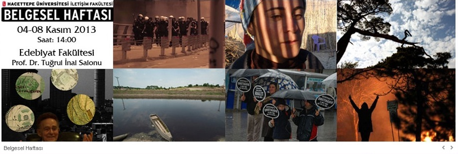

letiþim Fakültesi Belgesel Haftasý
Hacettepe Üniversitesi Ýletiþim Fakültesi
04-08 Kasým 2013 tarihleri arasýnda, Edebiyat Fakültesi Amfi 1’de
(Eski Prof. Dr. Tuðrul Ýnal Salonu’nda) belgesel film gösterimleri düzenleyecektir.
04 Kasým Pazartesi 14.00 Ýstanbul Hayali
05 Kasým Salý 14.00 Gündöndü
06 Kasým Çarþamba 14.00 Gördüm
14:15 Zahide, Tahir, Haným ve Diðerleri
07 Kasým Perþembe 14.00 Davutpaþa’nýn Külleri
08 Kasým Cuma 14.00 Yeþil Barýþ
14.40 ODTÜ Ayakta
Basýn sponsoru Radyo ODTÜ...
Facebook sayfasý için týklayýn...
Ýstanbul Hayali
Yönetmen : Perihan Bayraktar
Süre : 98’
Yapým Yýlý : 2013
Film, Türkiye’nin ilk þehir plancýsý olarak anýlan, Gezi Parký’nýn, Lütfü Kýrdar Uluslararasý Kongre ve Sergi Sarayý´nýn, Baðdat Caddesi’nin mimarý Aron Angel´in(1916-2010) ilginç yaþamý çerçevesinde Türkiye´nin kentleþme tecrübesini gözler önüne seriyor.
Gündöndü
Yönetmen : Nejla Demirci
Süre : 70’
Yapým Yýlý : 2012
Yýldýz Daðlarý’ndan doðan ve 285 km sonra Saros Körfezi’ne dökülen Ergene Nehri 25-30 yýl öncesine kadar geçtiði topraklara hayat veren bir nehirdi. Oysa bugün nehirde hiçbir canlý organizmanýn yaþamadýðý, aðýr metallerle yüklü pas renginde akan bir suya dönüþtü.
Gündöndü, halen 1 milyon 50 bin insanýn yaþamakta olduðu Ergene Havzasýnýn, endüstri ile birlikte sosyal, kültürel, ekonomik ve ekolojik deðiþimleri anlatan ve Trakya bölgesinin nasýl etkilediðini, konuyla ilgili bilimsel verilerin yer aldýðý, canlý tanýklýklarý içeren bir belgesel.
Gördüm
Yönetmen : Sabite Kaya
Süre : 8’
Yapým Yýlý : 2013
Taksim Gezi Parký Direniþi'ni anlatan ilk belgesel.
Zahide, Tahir, Haným ve Diðerleri
Yönetmen : Gül Büyükbeþe Muyan
Süre : 55’
Yapým Yýlý : 2012
“Zahide, Tahir, Haným ve Diðerleri” adlý belgesel, Adana’nýn Karataþ ilçesi civarýnda kurulmuþ bu çadýr kentlerden birinde, yüzlerce kiþiyi barýndýran bu yerleþimde geçen bir günü anlatmayý amaçlýyor; ilkokuldan sonra “mecburluktan” okuldan alýnýp küçük kardeþlerine bakan Zahide’nin, köyünde karnýný doyuramadýðý için bütün ailesini toparlayýp çadýrkente göçen Tahir’in, hayatýný tarla tapanda geçirmiþ, yakýlan köyünü terketmek zorunda kalmýþ, kocasýný çoktan gömmüþ ve teselliyi ayný çadýr kentte yaþayan tek oðlu ve dört torununda arayan 70 yaþýndaki Haným’ýn gözünden anlatýlacak bir günü…
Davutpaþa’nýn Külleri
Yönetmen : Ayten Baþer
Süre : 60’
Yapým Yýlý : 2011
31 Ocak 2008 tarihinde Zeytinburnu / Davutpaþa Emek Ýþ Haný’nda bulunan maytap atölyesinde meydana gelen patlama da 21 iþçi hayatýný kaybetmiþ, 117 iþçi ise yaralanmýþtýr. “Kaza deðil bu bir cinayet” diyen aileler sorumlularýn yargýlanmasý için bir araya gelerek seslerini duyurmaya, sorunlarýný çözmeye, yaralarýný onarmaya çalýþmýþlardýr. Bu süreçte Davutpaþalý Aileler, adalet mücadelesi vererek bir yandan kaybettikleri için son görevlerini yerine getirirken bir yandan da süreç içinde haklarýný öðrenmiþ, iþçi haklarýna hassasiyetler geliþtirmiþ, deðiþmiþ, dönüþmüþ ve “Davutpaþalý Aileler” adýnda büyük bir ailenin içinde bulmuþtur kendilerini. Kamuoyunun gündemine de “Davutpaþalý Aileler” olarak girmiþlerdir.
Yeþil Barýþ
Yönetmen : Nuran Bayer
Süre : 30’
Yapým yýlý :
Tuncel Kurtiz anýsýna…
Tuncel Kurtiz’in bakýþý ile Ýda (Kazdaðlarý)…
ODTÜ Ayakta
Yönetmen : Kolektif Sinema
Süre : 33’
Yapým Yýlý : 2013
Baþbakan Erdoðan'ýn 18 Aralýk'ta ODTÜ'ye gelmesi ile ortaya çýkan ODTÜ direniþinin belgeseli.
Bilgi için:
Hacettepe Üniversitesi
Ýletiþim Fakültesi
Prodüksiyon Birimi
Sibel Tekin
Tel : (0312) 297 62 25 / 122
E-mail: stekin(at)hacettepe(dot)edu(dot)tr
|